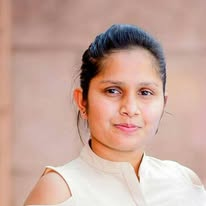

Gallery



Laboratory Technician & Science Educator
Dedicated science professional with over eight years of experience across laboratory practice and physics and science teaching — bringing scientific rigour, laboratory safety, inclusive practice, and genuine care for student success to every lab and classroom.
Profile
Experienced science professional with over eight years spanning physics, chemistry, and biology, combining extensive laboratory supervision with hands-on practical work and classroom experience teaching physics and technology. Also brings over two years' experience as an assistant chemist in a water treatment company, with strong skills in chemical analysis, water quality testing, and laboratory procedures. Skilled in scientific data handling, quality assurance, and safe laboratory practices, with published research in water quality and a strong commitment to accuracy and teamwork in laboratory environments.
Work Experience
Education
Research & Publications
Skills
Languages
Gallery